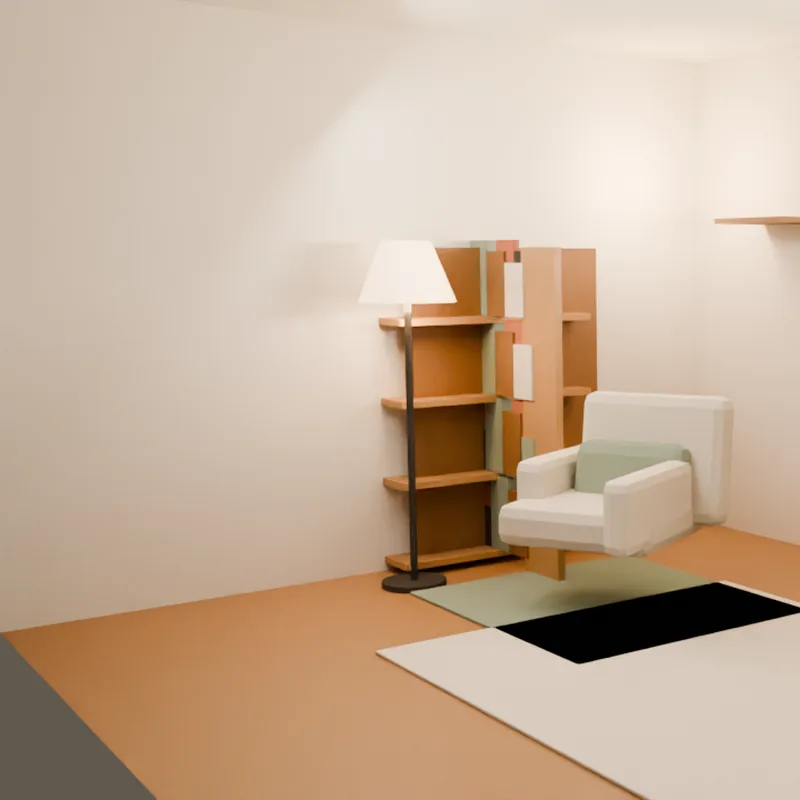
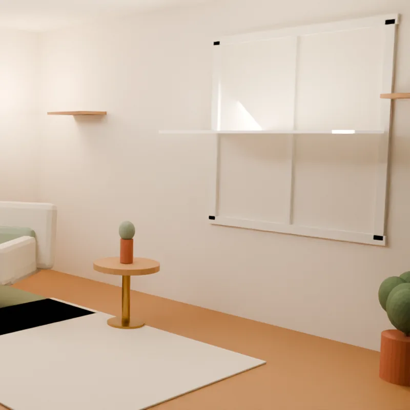

All work

Visual study · Study · 2026
Reading Nook
A quiet corner for one: a linen armchair, a low brass table and a wall of books — modelled and rendered as a spatial study.
A room built around light, texture and restraint.
This study asks how little a room needs. A chair, a light, a surface for a cup, and enough books to make the walls feel inhabited. The answer is not much — but each object has to earn its place.
The palette moves between linen, sage and oak, with brass only where the hand might rest. Rendered in Blender with warm, low contrast lighting to test how the corner would feel at the end of the day.


Next project